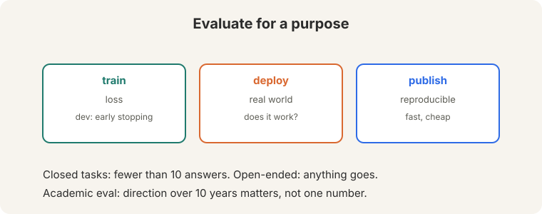
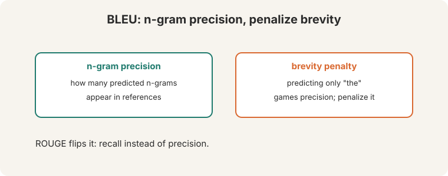
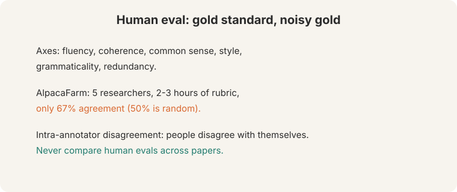
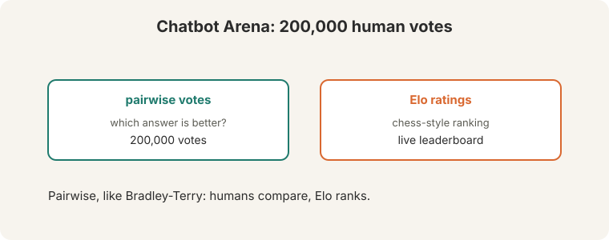
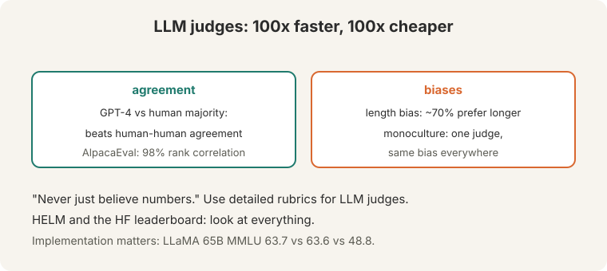
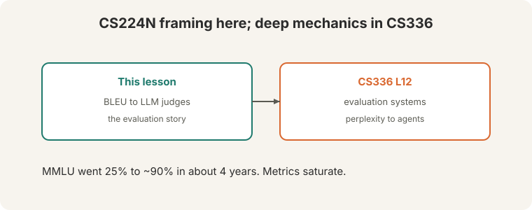

Lecture 11: Evaluation (Bridge)
Video blocked (ad-blocker or local file mode).
Watch on YouTubeVideo not loading? Watch on YouTube
Guest lecture. Yann Dubois covers evaluation from BLEU to LLM judges.
Bridge lesson. This lecture teaches the CS224N framing: the full evaluation story from BLEU to LLM judges. For deep mechanics, follow the link: CS336 L12 (perplexity to agents, contamination, scaffolds). This lesson never re-explains what that covers.
How to read this lesson
This lesson has two levels. Level 1 (Core) covers why we evaluate and how n-gram metrics fail. Level 2 (Deep) covers human evaluation, arenas, and LLM judges.
Level 1: Why evaluate
Four purposes:

- Train: the loss guides optimization.
- Dev: early stopping picks the checkpoint.
- Deploy: does it work in the real world?
- Publish: academic eval must be reproducible, standardized, fast, and cheap. What matters is the direction over 10 years, not one number.
Tasks split into closed (fewer than 10 answers) and open-ended. MMLU climbed from 25% to ~90% in about 4 years. Metrics saturate. The field moves on.
Level 1: BLEU and ROUGE
BLEU: n-gram precision plus a brevity penalty. Without the penalty, predicting only “the” would game precision.

ROUGE flips it: recall instead of precision. Semantic metrics (2016-2019) averaged embeddings and took cosines.
Level 1: Overlap is not meaning
Reference: “heck yes” (23:54 ⏱23:54):

- “yes”: 67% BLEU. Partial match.
- “yep”: 0 BLEU. False negative (24:39 ⏱24:39): means the same, scores zero.
- “heck no”: matches ~7x words. False positive: means the opposite, scores well.
N-gram overlap is not meaning. ROUGE-L is uncorrelated with human judgments on standard references, though the lecture notes “the references are usually not great”: with expert-written summaries, correlation improves.
For fast iteration on similar systems. BLEU is cheap, reproducible, and directionally right when comparing close variants. It fails for open-ended generation, where many valid answers share no n-grams with the reference. Human evaluation first, then LLM judges. Reference-free evaluation asks a strong model (AlpacaEval, MT-Bench) to judge directly. No reference means no overlap gaming.
Level 2: Human evaluation is a noisy gold standard
Human eval is the gold standard. Axes: fluency, coherence, common sense, style, grammaticality, redundancy. And it is noisy:

AlpacaFarm: 5 researchers, 2-3 hours writing rubrics, only 67% agreement (50% is random). People even disagree with themselves (intra-annotator disagreement). Never compare human evals across papers: different rubrics, different annotators, different numbers.
Chatbot Arena (44:03 ⏱44:03): 200,000 human votes, Elo ratings. Pairwise preferences, chess-style ranking, live leaderboard.

Level 2: LLM judges
LLM-as-judge: 100x faster and 100x cheaper than humans (46:42 ⏱46:42). GPT-4’s agreement with the human majority beats humans’ agreement with each other. AlpacaEval reaches 98% rank correlation with Chatbot Arena (51:24 ⏱51:24).

Biases: length bias, humans and models prefer longer outputs ~70% (49:41 ⏱49:41). Monoculture: one judge’s bias applied to every model is worse than diverse human biases. Fix: detailed rubrics for LLM judges.
HELM and the HuggingFace leaderboard “look at everything.” Implementation matters: LLaMA 65B MMLU reads 63.7 (HELM), 63.6 (original), 48.8 (harness). Same model, different harness, different number.
The closing line: “never just believe numbers” (79:45 ⏱79:45).
For iteration, yes: they are 100x faster and cheaper with 98% rank correlation. For final claims, keep humans. LLM judges share one model’s biases. A monoculture of judgment is worse than noisy humans. Use detailed rubrics either way. Implementation variance. The same model scores 63.7, 63.6, or 48.8 on MMLU depending on the harness. Never compare numbers across papers or harnesses. Reproduce the setup or do not cite the number.
Recap: the whole lesson on one screen
Eight ideas carry this lecture. Read each card. Say the core sentence out loud. If you can, you own the lesson.
Train, dev, deploy, publish. Academic eval: reproducible, fast, cheap. Direction over 10 years matters.
Key: purpose decides the metric
N-gram overlap against references. The penalty stops "the"-only gaming. ROUGE uses recall. Both are cheap and crude.
Key: overlap, not meaning
"yep": 0 BLEU, means the same. "heck no": matches words, means the opposite. False negatives and false positives.
Key: 23:54 ⏱23:54
67% agreement after hours of rubrics. People disagree with themselves. Never compare human evals across papers.
Key: gold standard, noisy gold
Pairwise human preferences, chess-style ratings, live leaderboard. The human-eval standard of the era.
Key: 44:03 ⏱44:03
GPT-4 beats human-human agreement. AlpacaEval: 98% rank correlation. Length bias ~70%. Monoculture risk.
Key: use detailed rubrics
LLaMA 65B MMLU: 63.7, 63.6, or 48.8 by harness. Same model. Never trust a number without its setup.
Key: harness is half the score

CS336 L12: perplexity to agents, contamination, scaffolds. "Never just believe numbers."
Key: 79:45 ⏱79:45
Official sources and further reading
Official: - Lecture 11 video and transcript. - Liang et al. (2022): HELM.
Further reading: - CS336 L12: evaluation systems in depth. - Zheng et al. (2023), “Judging LLM-as-a-Judge”: the bias analysis. - Chatbot Arena (LMSYS): the live leaderboard.
Caveats from these sources. “100x faster and cheaper” is the lecture’s price comparison at the time. Prices move. “98% rank correlation” is AlpacaEval versus Chatbot Arena specifically.
Connections to the other courses
- This course: L10’s models are what L11 evaluates. L07’s BLEU section was the preview.
- CS336: L12 (evaluation) carries the deep mechanics: perplexity, contamination, agent benchmarks.
- CS329H: social choice theory explains why pairwise voting (Elo) aggregates preferences.
Evaluation cheatsheet. Purposes: train, dev, deploy, publish. Closed <10 answers. Open-ended. MMLU 25%->90% in ~4y. BLEU: n-gram precision + brevity penalty. ROUGE: recall. “heck yes”: yes=67%, yep=0 (FN), heck no ~7x (FP). Human: gold, noisy; 67% agreement. Never cross-compare. Arena: 200k votes, Elo. LLM judge: 100x faster/cheaper, GPT-4 > human-human; 98% rank corr. Length bias 70%. Monoculture. HELM: look at everything. Harness changes numbers: 63.7/63.6/48.8. Rule: never just believe numbers.
Overlap is not meaning. Numbers are not truth. BLEU counts n-grams. Humans disagree. Judges have biases. Harnesses move scores. Believe the direction, verify the setup.
Sources
- VIDEOLecture 11 video, Stanford Online YouTube
- NOTESOfficial subtitle transcript
- PAPERLiang et al., Holistic Evaluation of Language Models (2022)